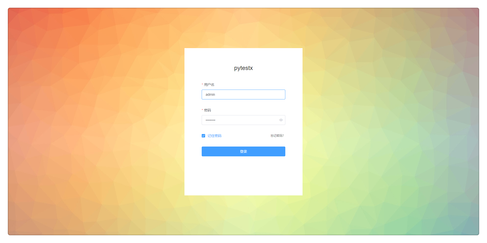
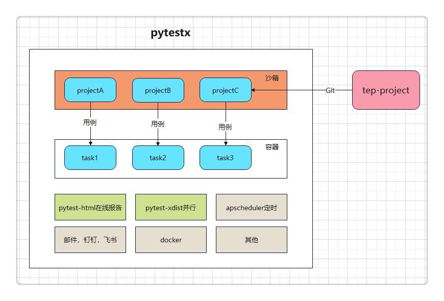
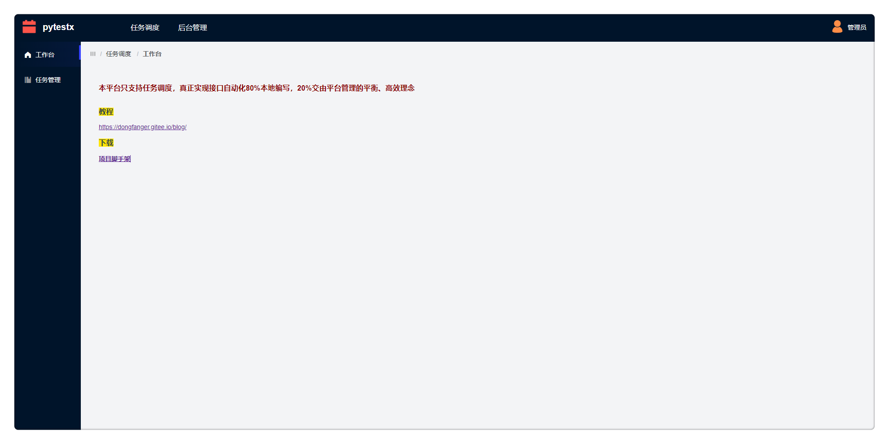
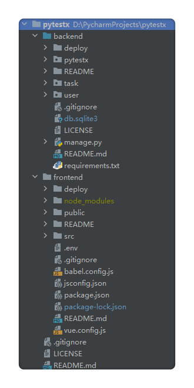
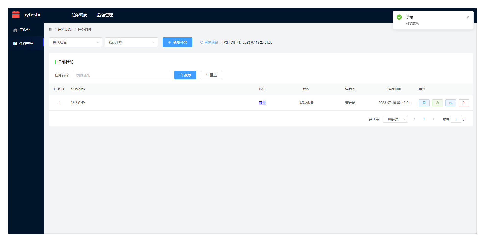
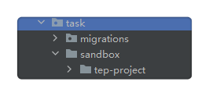
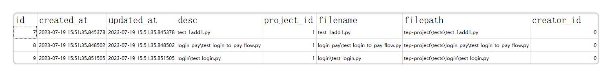
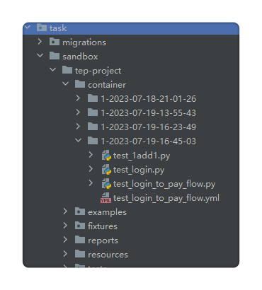
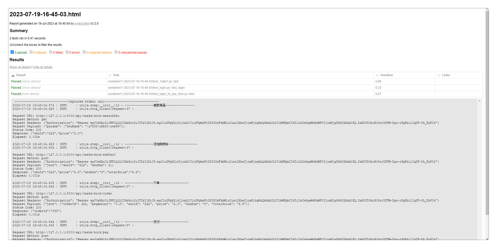

聚焦于任务调度的测试平台pytestx¶

设计理念¶
聚焦于任务调度，接口自动化80%本地编写，20%交由平台管理。
如果使用pytest做接口自动化，那么个人认为最好的编写工具是PyCharm，任何低代码测试平台都无法取代。当然不会代码，或者不使用pytest，那低代码测试平台，或者yaml，甚至excel写自动化用例，都是可以接受的。而在使用pytest这个特定场景里面，要做平台化，平台的功能就需要仔细斟酌。既然编写用例最好使用PyCharm，平台也就只能专注于用例编排和任务调度，即创建任务，关联用例，批量运行，以及定时，并行，通知等。
pytestx正是基于此理念设计的一款纯粹的任务调度平台。

平台架构¶

tep1.0.0的延续¶
tep1.0.0版本已经封版，在pytestx中对它进行了延续。
从pypi到git
tep是上传到pypi的，通过pip命令安装，使用tep startproject命令创建项目脚手架，代码结构分为项目代码和tep代码。改造后的tep只有项目代码，存放在：
https://gitee.com/dongfanger/tep-project.git
也就是说，在这个项目中，能看到整个tep全貌。之前的tep内核代码，比如fixtures自动寻找、内置fixture、环境变量等，全部迁移到了项目代码里面，尤其是conftest.py的文件内容。pip install tep顺带安装的依赖包，也整理到了requirements.txt，按照说明安装即可。
pytest-html替换allure
由重到轻，化繁为简，pytest-html能够满足数据+日志的报告需要，最新的V3.2.0版本的界面尚可。诚然allure漂亮，但安装Java、下载Allure、配置环境变量、安装pytest-allure、添加pytest hook还是相对麻烦。更重要的是，要支持平台在线查看报告，减少存储占用，pytest-html无疑是更好的选择。
下载脚手架
既可以从使用git clone下载代码，也可以从页面下载，就像spring.io那样：

fastapi到django
之前的示例代码是调用的fastapi启动的应用，pytestx则将示例代码的接口换成了Django自身的mock接口。
teprunner的延续¶
pytestx的基础代码是从teprunner来的，对数据库设计、代码规范、项目结构做了优化。

任务管理¶

一、同步项目
同步项目，是把项目配置的Git仓库地址和分支，更新到本地沙箱中，项目之间完全隔离。

并把用例落库：

二、任务关联用例
创建任务，任务关联用例，就形成了新的用例集。
三、容器化运行
当前是假容器，未真正引入Docker，所谓容器，是指每次运行，都将用例拉取到新的目录，批量执行：

四、生成报告
pytest命令生成html报告，存放于reports，借助于Django挂载页面，从页面点击，在线查看报告：

体验平台¶
下载源码：https://github.com/dongfanger/pytestx
安装依赖：前端（npm install）后端（pip install -r requirements.txt）
启动服务：前端（npm run serve）后端（python manage.py runserver）
即可畅快体验。
学习交流¶
添加微信cekaigang，加入交流群，欢快讨论吧。